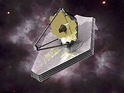
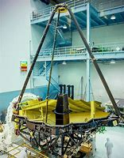
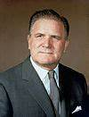
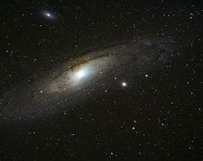

Nancy&Ninho
JAMES WEBB
"O James Webb é o principal observatório da próxima década" é o que está escrito no site Webb Space Telescope, hoje vim falar sobre o magnífico James Webb, que foi projetado pela Nasa em colaboração com a Agência Espacial Europeia (ESA) e a Agência Espacial Canadiana (CSA). Espero que esse breve resumo os ajudem a entender um pouco mais sobre do Webb.

.O que é?
Ele estuda todas as fases da história do nosso Universo, pode observar a evolução no nosso sistema solar, investigar cada vez mais o nosso maravilho universo, descobrindo até o primeiro brilho de todo universo. Em inglês James Webb Space Telescope (JWST) é um telescópio espacial desenvolvido em conjunto pela NASA, a ESA e a CSA, com a capacidade de colocar no espaço um observatório para captar a radiação infravermelha.

.Qual é seu objetivo?

James Webb estuda todas as fases da história do nosso Universo, desde os primeiros brilhos luminosos , até a formação de sistemas solares e até mesmo planetas capazes de suportar a vida como a Terra. Este telescópio tem a intenção de substituir o telescópio espacial Hubble. Porém, sua primeira missão é a de examinar a radiação infravermelha resultante do Big Bang e realizar observações sobre a infância do Universo.
.Quando foi lançado e qual a origem do seu nome?

Webb foi lançado em 25 de dezembro de 2021 no Centro Espacial de Kourou na Guiana Francesa. O telescópio foi inicialmente denominado de Next Generation Space Telescope, logo depois o telescópio foi remomeado em honra a um antigo administrador da agência espacial americana, James Edwin Webb.
<<<<<<< HEAD
.Curiosidades

-
O Telescópio Espacial James Webb da NASA observou um brilho infravermelho, revelando detalhes finos que lembram os nós e espirais do grão da madeira. Estas observações estão a permitir aos astrónomos mapear pela primeira vez a verdadeira estrutura 3D deste gás e poeira interestelar (conhecido como meio interestelar) .
-
Ele não orbita ao redor da Terra como o Telescópio Espacial Hubble, ele orbita o Sol a 1,5 milhão de quilômetros (1 milhão de milhas) de distância da Terra no que é chamado de segundo ponto de Lagrange ou L2.
-
James Edwin Webb (1906-1992) foi um militar e político dos Estados Unidos da América que administrou a Nasa de 1961 a 1968.
-
Em 11 de julho de 2022, a Nasa divulgou a primeira imagem registrada pelo Webb ao presidente dos Estados Unidos da América, Joe Biden.
-> Mais informações...
Se quiser saber mais sobre o James Webb é só clicar nos links abaixo que eu utilizei para fazer esse breve resumo:
=======
A prática leva a perfeição
>>>>>>> c8a3e6e40a446c2d31679a6c7a79647567e9d345